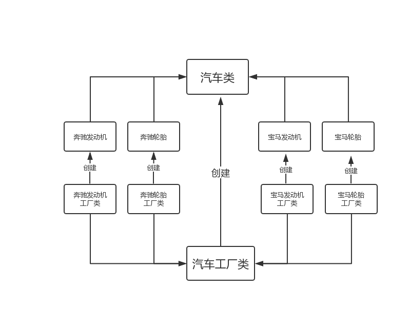
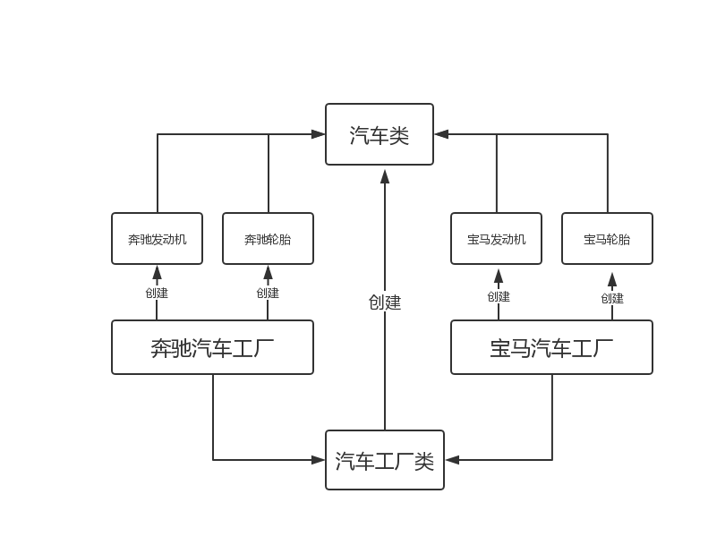
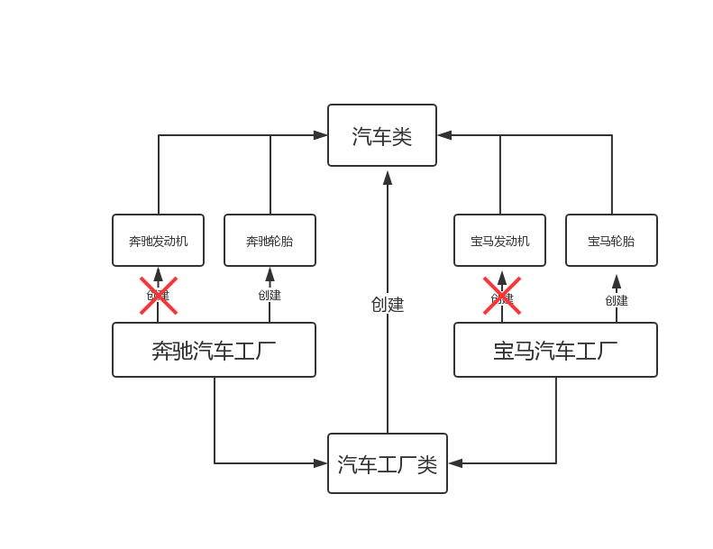

工厂模式应用非常之广，在JDK底层源码以及各大主流框架中随处可见，一般以Factory结尾命名的类，比如Mybatis中的SqlSessionFactory，Spring中的BeanFactory等，都是工厂模式的典型代表。
简单工厂模式又称为静态工厂模式，属于设计模式中的创建型模式。简单工厂模式通过对外提供一个静态方法来统一为类创建实例，目的是实现类与类之间解耦:客户端不需要知道这个对象是如何被穿创建出来的，只需要调用简单工厂模式的方法来统一创建就可以了，从而明确了各个类的职责。
简单工厂模式，以生产汽车轮胎为例。
public class Tire {
/**
* 通用属性
*/
private String common;
}包含通用属性外还有自己的特有属性
public class TireForBenz extends Tire{
Tire tire;
/**
* 特有属性
*/
private String benz;
public TireForBenz() {
this.benz = "得到 Benz 轮胎";
}
@Override
public String toString() {
return "["+this.benz +"]";
}
}包含通用属性外还有自己的特有属性
public class TireForBwm extends Tire{
Tire tire;
/**
* 特有属性
*/
private String bwm;
public TireForBwm() {
this.bwm = "得到 Bwm 轮胎";
}
@Override
public String toString() {
return "["+this.bwm +"]";
}
}public interface TireFactory {
Tire produceTire();
}重写生产轮胎的方法返回奔驰型轮胎。
public class BenzTireFactory implements TireFactory {
/**
* 生产奔驰轮胎
*/
@Override
public Tire produceTire() {
System.out.println("奔驰轮胎生产中。。。");
return new TireForBenz();
}
}重写生产轮胎的方法返回宝马型轮胎。
public class BwmTireFactory implements TireFactory {
/**
* 生产宝马轮胎
*/
@Override
public TireForBwm produceTire() {
System.out.println("宝马轮胎生产中。。。");
return new TireForBwm();
}
}通过传入的品牌名称调用相应产线生产相应品牌的轮胎
public class SimpleFactoryMode {
public static TireFactory produceCar(String name) {
if ("BenzTireFactory".equals(name)) {
return new BenzTireFactory();
}
if ("BwmTireFactory".equals(name)) {
return new BwmTireFactory();
}
return null;
}
}
客户端通过工厂类获取实例对象。
@Test
public void simpleFactoryModeTest() {
// 造奔驰轮胎
TireFactory benz = SimpleFactoryMode.produceCar("BenzTireFactory");
if (null != benz) {
benz.produceTire();
}else {
System.out.println("工厂暂时无法生产奔驰轮胎");
}
// 造宝马轮胎
TireFactory bwm = SimpleFactoryMode.produceCar("BwmTireFactory");
if (null != bwm) {
bwm.produceTire();
}else {
System.out.println("工厂暂时无法生产宝马轮胎");
}
// 造本田汽轮胎(工厂无该方法)
TireFactory honda = SimpleFactoryMode.produceCar("Honda");
if (null != honda) {
honda.produceTire();
}else {
System.out.println("工厂暂时无法生产本田轮胎");
}
}奔驰轮胎生产中。。。
宝马轮胎生产中。。。
工厂暂时无法生产本田轮胎该方式确实能完成不同品牌的轮胎生产，但是，有个问题：方法参数是字符串，可控性有待提升。
不要通过传入的字符串来判断需要创建对象，而是客户端想要创建什么对象，只需要传入具体的实现类就可以了，然后通过
Java的反射来创建对象。
public static TireFactory produceCar(Class<? extends TireFactory> clazz) {
try {
// 通过Java的反射来创建对象
return clazz.newInstance();
} catch (InstantiationException e) {
e.printStackTrace();
} catch (IllegalAccessException e) {
e.printStackTrace();
}
return null;
}每次创建对象都是通过反射来创建的，所以在性能上是有一定的损耗。
public void simpleFactoryModeUpgradeTest() {
// 造奔驰轮胎
TireFactory benzTire = SimpleFactoryMode.produceCar(BenzTireFactory.class);
TireForBenz benz = (TireForBenz) benzTire.produceTire();
System.out.println(benz.toString());
// 造宝马轮胎
TireFactory bwmTire = SimpleFactoryMode.produceCar(BwmTireFactory.class);
TireForBwm bwm = (TireForBwm) bwmTire.produceTire();
System.out.println(bwm.toString());
}奔驰轮胎生产中。。。
[得到 Benz 轮胎]
宝马轮胎生产中。。。
[得到 Bwm 轮胎]简单工厂模式确实在一定程度上实现代码的解耦，而这种解耦的特点在于，这种模式将对象的创建和使用分离。这种模式的本质在于通过一个传入的参数，做if...else判断，来达到返回不同类型对象的目的。缺点也很明显，不符合开闭原则（比如新增一个保时捷轮胎的生产，除了需要增加实体和生产方法，还需要修改工厂类SimpleFactoryMode.java）。因此，如果需要增加新的类型，就不得不去修改原来的代码，违反开闭原则。
那就是它把所有对象的创建都集中在同一个工厂类里面了，因此，当新增一个新对象时，必然会需要修改这个共享工厂类，违反开闭原则自然不可避免。
既然问题关键在于，所有对象的创建都跟这个唯一的工厂类耦合了，那我每个对象各自都配置一个单独的工厂类，这个工厂类只创建各自类型的对象，那这样不就解决耦合的问题了吗？
工厂方法模式是指定义一个创建对象的接口，但让实现这个接口的类来决定实例化哪个类。工厂方法让类的实例化推迟到子类中进行。在工厂方法模式中用户只需要关心所需产品对应的工厂，无须关心创建细节，而且加入新的产品符合开闭原则。
工厂方法模式，以生产发动机为例。
public class Engine {
/**
* 型号
*/
private String common;
}包含通用属性外还有自己的特有属性
public class EngineForBenz extends Engine{
Engine engine;
/**
* 特有属性
*/
private String benz;
public EngineForBenz() {
this.benz = "得到 Benz 发动机";
}
@Override
public String toString() {
return "["+this.benz +"]";
}
}包含通用属性外还有自己的特有属性
public class EngineForBwm extends Engine{
Engine engine;
/**
* 特有属性
*/
private String bwm;
public EngineForBwm() {
this.bwm = "得到 Bwm 发动机";
}
@Override
public String toString() {
return "["+this.bwm +"]";
}
}public interface EngineFactory<T> {
Engine produceEngine();
}public class BenzEngineFactory implements EngineFactory<EngineForBenz> {
/**
* 生产奔驰发动机
*/
@Override
public Engine produceEngine() {
System.out.println("奔驰发动机生产中。。。");
return new EngineForBenz();
}
}public class BwmEngineFactory implements EngineFactory<EngineForBwm> {
/**
* 生产宝马发动机
*/
@Override
public Engine produceEngine() {
System.out.println("宝马发动机生产中。。。");
return new EngineForBwm();
}
}@Test
public void factoryModeTest() {
// 造奔驰发动机
EngineFactory car = new BenzEngineFactory();
EngineForBenz benz = (EngineForBenz) car.produceEngine();
System.out.println(benz.toString());
// 造宝马发动机
EngineFactory carFactory = new BwmEngineFactory();
EngineForBwm bwm = (EngineForBwm) carFactory.produceEngine();
System.out.println(bwm.toString());
}奔驰发动机生产中。。。
[得到 Benz 发动机]
宝马发动机生产中。。。
[得到 Bwm 发动机]工厂方法模式轻松解决了简单工厂模式的问题，符合开闭原则。在上面例子中，当需要新增一个保时捷汽车，此时只需要提供一个对应的EngineForBSJ.java实现produceEngine()方法即可，对于原先代码再不需要做任何修改。
但是每个类型的对象都会有一个与之对应的工厂类。如果对象的类型非常多，意味着会需要创建很多的工厂实现类，造成类数量膨胀，对后续维护带来一些麻烦。
抽象工厂模式出现，就是为了解决上述工厂方法模式存在的问题，可以看成是工厂方法模式的升级。
工厂方法模式创建的对象其实归根到底都是同一类对象。以汽车生产为例，无论是轮胎还是发动机，都是汽车生产的一部分，都是属于汽车生产的过程。如下图：

由上图我们可以发现，虽然分为奔驰车和宝马车，但是从工厂方法角度，他们都属于汽车这一类别，这就导致了需要单独为每一个零件指定各自的工厂类，从而导致了类数量膨胀的问题。
既然这样，我们可以把每类汽车指定一个工厂，然后再让不同产线去生产他需要的产品，如下图

这样当每一类物品组件数量特别多，可以把它称为产品族。抽象工厂模式就是为了创建一系列以产品族为单位的对象，这样在需要创建大量系列对象时可以大大提高开发效率，降低维护成本。
因为奔驰轮胎/宝马轮胎/奔驰发动机/宝马发动机的实体在前面已经创建过，这里就直接用了。
该类已包含轮胎/发动机生产，具体实体键一/二中相关实体。
public interface CarFactory {
/**
* 准备生产
*/
void init();
/**
* 生产轮胎
* @return
*/
Tire produceTire();
/**
* 生产发动机
* @return
*/
Engine produceEngine();
}public class BenzCarFactory implements CarFactory{
@Override
public void init() {
System.out.println("----------------------- 奔驰汽车准备生产 -----------------------");
}
@Override
public Tire produceTire() {
System.out.println("正在生产奔驰轮胎");
return new TireForBenz();
}
@Override
public Engine produceEngine() {
System.out.println("正在生产奔驰发动机");
return new EngineForBenz();
}
}public class BwmCarFactory implements CarFactory{
@Override
public void init() {
System.out.println("----------------------- 宝马汽车准备生产 -----------------------");
}
@Override
public Tire produceTire() {
System.out.println("正在生产宝马轮胎");
return new TireForBwm();
}
@Override
public Engine produceEngine() {
System.out.println("正在生产宝马发动机");
return new EngineForBwm();
}
}@Test
public void abstractFactoryModeTest() {
// 生产奔驰整车的零部件
CarFactory benz = new BenzCarFactory();
benz.init();
TireForBenz benzTire = (TireForBenz) benz.produceTire();
System.out.println(benzTire.toString());
EngineForBenz benzEngine = (EngineForBenz) benz.produceEngine();
System.out.println(benzEngine.toString());
// 生成宝马整车的零部件d
CarFactory bwm = new BwmCarFactory();
bwm.init();
TireForBwm bwmTire = (TireForBwm) bwm.produceTire();
System.out.println(bwmTire.toString());
EngineForBwm bwmEngine = (EngineForBwm) bwm.produceEngine();
System.out.println(bwmEngine.toString());
}----------------------- 奔驰汽车准备生产 -----------------------
正在生产奔驰轮胎
[得到 Benz 轮胎]
正在生产奔驰发动机
[得到 Benz 发动机]
----------------------- 宝马汽车准备生产 -----------------------
正在生产宝马轮胎
[得到 Bwm 轮胎]
正在生产宝马发动机
[得到 Bwm 发动机]既然说抽象工厂模式是工厂方法模式的升级，那到底升级了啥？
其实是由原来的单一产品的生产升级成为了系列产品的生产。设想一下，假设上面汽车的例子中，每一品牌汽车中就只生产一种部件，比如就只生产发动机，不生产轮胎等其他组件了，如下图

发现了什么没有？抽象工厂模式居然转变为我们之前讲过的工厂方法模式了！换句话说，当你的产品族中只生产一种产品的时候，你的抽象工厂模式其实已经退化为工厂方法模式了。反过来说，当生产多种产品时，工厂方法模式就进化为抽象工厂模式。
抽象工厂模式在创建大量系列对象时可以大大提高开发效率，就是为生产产品族而生的，而对于生产单一产品却无能为力。
如果需要添加一个新的产品族，那就简单了，比如新增一个保时捷汽车，那就只需要添加一个保时捷汽车的工厂实现类就好了，并不会对原有的代码造成任何影响。
但是，如果假设在汽车中，我需要再加一个组件，比如倒车影像，怎么操作？你需要在CarFactory接口中添加返回倒车影像对象的接口。这一加不得了了......所有品牌汽车实现类全部需要修改并追加该方法的实现，违反了开闭原则。
创建大量系列对象时可以大大提高开发效率，降低维护成本。
工厂模式的三种形式都介绍完了，那我们实际开发中该如何去选择呢？